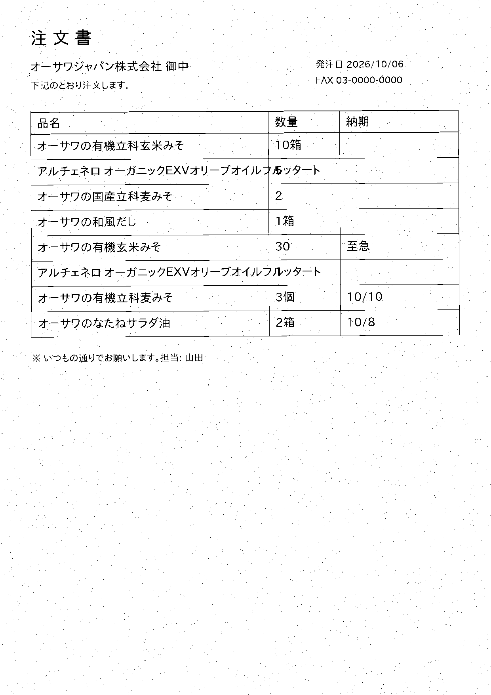

<!doctype html><html lang="ja"><meta charset="utf-8"><meta name="viewport" content="width=device-width,initial-scale=1">
<title>オーサワジャパン株式会社 宛の注文書（架空） 確認画面</title>
<style>
:root{--bg:#f6f6f2;--sheet:#fff;--ink:#1d2433;--sub:#5b6477;--rule:#d9dce3;--ok:#2f6b4f;--ok-soft:#e3efe8;--warn:#b26a00;--warn-soft:#fff3dc;--bad:#b23a2a;--bad-soft:#f7e6e2;--indigo:#2b3f7a}
body{margin:0;background:var(--bg);color:var(--ink);font-family:"IPAPGothic","Noto Sans CJK JP",system-ui,sans-serif;font-size:14px}
header{padding:12px 20px;border-bottom:2px solid var(--ink);display:flex;justify-content:space-between;align-items:baseline;background:var(--sheet)}
h1{font-size:18px;margin:0} .sub{color:var(--sub);font-size:12px}
main{display:grid;grid-template-columns:1fr 1fr;gap:16px;padding:16px 20px}
.pane{background:var(--sheet);border:1px solid var(--rule);border-radius:6px;padding:12px;min-width:0}
img{max-width:100%;border:1px solid var(--rule)}
table{border-collapse:collapse;width:100%} th,td{border-bottom:1px solid var(--rule);padding:6px 8px;text-align:left;vertical-align:top}
th{font-size:11.5px;color:var(--sub)} td.n{text-align:right;font-variant-numeric:tabular-nums}
.b{display:inline-block;padding:1px 8px;border-radius:999px;font-size:11.5px;font-weight:600}
.ok{background:var(--ok-soft);color:var(--ok)} .warn{background:var(--warn-soft);color:var(--warn)} .bad{background:var(--bad-soft);color:var(--bad)}
select,input{font:inherit;padding:3px 6px;border:1px solid var(--rule);border-radius:4px;max-width:100%}
.foot{display:flex;gap:12px;align-items:center;margin-top:12px} button{font:inherit;padding:6px 14px;border-radius:6px;border:1px solid var(--indigo);background:var(--indigo);color:#fff;cursor:pointer}
.stat{color:var(--sub);font-size:12.5px}
@media(max-width:900px){main{grid-template-columns:1fr}}
</style>
<header><h1>オーサワジャパン株式会社 宛の注文書（架空）</h1><span class="sub">読み取り結果の確認 → 直す → CSVを書き出す（販売管理に取り込む）</span></header>
<main>
<section class="pane"></section>
<section class="pane">
<table><thead><tr><th>#</th><th>読み取った品名</th><th>品番（候補から選ぶ）</th><th>数量</th><th>単位</th><th>納期</th><th>判定</th></tr></thead><tbody id="rows"></tbody></table>
<div class="foot"><button id="dl">CSVを書き出す</button><span class="stat" id="stat"></span></div>
</section></main>
<script>
const CAT={"OJ-001": "オーサワの有機玄米みそ(甘口)彩仕込み", "OJ-002": "アルチェネロ オーガニックＥＸＶオリーブオイルフルッタート", "OJ-003": "アルチェネロ オーガニックＥＸＶオリーブオイルフルッタート", "OJ-004": "オーサワの有機立科米みそ", "OJ-005": "オーサワの国産立科あわせみそ", "OJ-006": "オーサワの国産立科あわせみそ", "OJ-007": "オーサワの国産立科麦みそ(箱入り)", "OJ-008": "オーサワの国産立科麦みそ", "OJ-009": "オーサワの有機立科麦みそ", "OJ-010": "オーサワの有機立科豆みそ", "OJ-011": "オーサワの有機立科玄米みそ", "OJ-012": "オーサワの茜醤油(ペットボトル)", "OJ-013": "オーサワのなたねサラダ油", "OJ-014": "オーサワのなたねサラダ油", "OJ-015": "オーガニックフラックスシードオイル(有機亜麻仁油)", "OJ-016": "オーサワの和風だし"}; const ROWS=[{"品名_読み取り": "オーサワの有機立科玄米みそ", "数量": 10, "単位": "箱", "納期": "", "品番": "OJ-011", "確度": 1.0, "根拠": "一致", "候補": ["OJ-011", "OJ-004", "OJ-010"], "読み取り確度": 67.6}, {"品名_読み取り": "オーサワの国産立科麦みそ", "数量": 2, "単位": "", "納期": "", "品番": "OJ-008", "確度": 1.0, "根拠": "一致", "候補": ["OJ-008", "OJ-007", "OJ-006"], "読み取り確度": 72.1}, {"品名_読み取り": "オーサワの和風だし", "数量": 1, "単位": "箱", "納期": "", "品番": "OJ-016", "確度": 1.0, "根拠": "一致", "候補": ["OJ-016", "OJ-014", "OJ-013"], "読み取り確度": 67.6}, {"品名_読み取り": "オーサワの有機玄米みそ", "数量": 30, "単位": "", "納期": "至急", "品番": "OJ-001", "確度": 0.9, "根拠": "一致", "候補": ["OJ-001", "OJ-011", "OJ-004"], "読み取り確度": 94.4}, {"品名_読み取り": "オーサワの有機立科麦みそ", "数量": 3, "単位": "個", "納期": "10/10", "品番": "OJ-009", "確度": 1.0, "根拠": "一致", "候補": ["OJ-009", "OJ-010", "OJ-004"], "読み取り確度": 90.2}, {"品名_読み取り": "オーサワのなたねサラダ油", "数量": 2, "単位": "箱", "納期": "10/8", "品番": "OJ-014", "確度": 1.0, "根拠": "一致", "候補": ["OJ-014", "OJ-013", "OJ-016"], "読み取り確度": 90.8}];
const tb=document.getElementById('rows');
function badge(r){const c=r.確度>=0.9?'ok':r.確度>=0.6?'warn':'bad';const t=r.確度>=0.9?'一致':r.確度>=0.6?'要確認':'不明';return `<span class="b ${c}">${t} ${r.確度}</span>`}
ROWS.forEach((r,i)=>{const tr=document.createElement('tr');
 const opts=[...new Set([r.品番,...r.候補].filter(Boolean))].map(c=>`<option value="${c}" ${c===r.品番?'selected':''}>${c} ${CAT[c]||''}</option>`).join('')+'<option value="">（該当なし）</option>';
 tr.innerHTML=`<td>${i+1}</td><td>${r.品名_読み取り}</td><td><select data-i="${i}">${opts}</select></td><td class="n"><input type="number" value="${r.数量}" size="4" data-q="${i}"></td><td>${r.単位}</td><td>${r.納期}</td><td>${badge(r)}</td>`;
 tb.appendChild(tr)});
const need=ROWS.filter(r=>r.確度<0.9).length; document.getElementById('stat').textContent=`${ROWS.length}行中 ${need}行が要確認`;
document.getElementById('dl').onclick=()=>{const lines=['品番,品名,数量,単位,納期'];
 document.querySelectorAll('#rows tr').forEach((tr,i)=>{const code=tr.querySelector('select').value;const q=tr.querySelector('input').value;lines.push([code,(CAT[code]||ROWS[i].品名_読み取り),q,ROWS[i].単位,ROWS[i].納期].map(v=>`"${String(v).replace(/"/g,'""')}"`).join(','))});
 const blob=new Blob(["\ufeff"+lines.join('\n')],{type:'text/csv'});const a=document.createElement('a');a.href=URL.createObjectURL(blob);a.download='order.csv';a.click()};
</script></html>